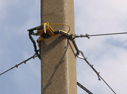
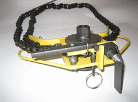
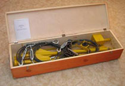

Комплект раскрепляющий "Спрут"
При выполнении работ на воздушных линиях электропередачи (ВЛ), если устойчивость опоры вызывает сомнения, необходимо её укрепить с помощью раскрепляющего устройства («Межотраслевые правила по охране труда при эксплуатации электроустановок» согласно п. 4.15.5).
Для укрепления деревянных и железобетонных опор используется комплект раскрепляющий «Спрут».
В настоящее время существует вариант поставки «Спрут» с якорями лемешного типа (забиваются в грунт) либо с якорями шнекового типа (закручиваются). Комплектом «Спрут» можно раскрепить деревянные, железобетонные и металлические опоры. Прочитать подробнее здесь.
Комплект раскрепляющий «Спрут» имеет комплектность, аналогичную устройству раскрепляющему УР-3, а также другие варианты поставки. Познакомиться можно здесь.
Устройство раскрепляющее «Спрут» разрабатывалось специалистами компании «Электробезопасность-Вятка» с учетом технологических особенностей и современных требований к выполнению работ, связанных с подъемом работника на опору. Вместе с устройством раскрепляющим потребитель приобретает безопасную и эффективную технологию укрепления опоры.
Порядок работы комплектов раскрепляющих "Спрут", смотрите в Руководстве по эксплуатации и Руководстве пользователя.
Особенности комплектации и применения
 Комплект раскрепляющий «Спрут», "Спрут" включает: цепной захват, три тросовые растяжки с талрепами для натяжения, три якоря, одну сборную штангу, ключ на 22 мм. Для транспортировки Комплект укладывается в футляр с ручками.
Дополнительно к комплекту раскрепляющему может поставляться боек с направляющей
При разработке устройств раскрепляющих «Спрут», "Спрут" учитывались многочисленные пожелания специалистов:
- Фиксация опоры осуществляется работником с земли цепным захватом с помощью сборной штанги. Фиксация захвата производится автоматически вместе с затяжкой цепи. После фиксации захвата штанга убирается.
- Цепной захват позволяет плотно охватывать (фиксировать) опоры любого по форме сечения (круг, прямоугольник, многогранник и др.). Разрывное усилие цепи не менее 2300 кгс. Масса цепного захвата не превышает 2,8 кг, что значительно меньше, чем у аналогов.
Малая масса захвата позволяет при необходимости выполнять работу по его подъему и фиксации одному члену бригады с земли с помощью сборной штанги. - Выходной вал цепного захвата имеет вид шестигранника на 22 мм, что позволяет использовать цепной захват (вместе с ключом на 22 мм.) в качестве временного бандажа при ремонтных работах и в других случаях.
- В данном устройстве применяются растяжки из металлического троса, а не из капроновых канатов. Стальной трос, при условии правильной эксплуатации, практически не теряет прочности (все дефекты легко определяемы), выдерживает большие нагрузки. Разрывное усилие тросовой растяжки комплекта «Спрут», "Спрут"- СО не менее 1200 кгс.
Капроновый канат менее надёжен и практичен, может значительно потерять прочность в результате воздействия перепадов температур, влаги, солнечного излучения, попадания на его поверхность ГСМ. - Натяжка тросов производится талрепами.
- Стальные якоря, которые забиваются в землю, для облегчения выполнены из стальных труб. Длина забиваемой части якоря не менее 0,9 м. Якоря усилены лемехами для уменьшения вероятности вырыва из грунта.
- Имеется сменная направляющая для забивания и извлечения якорей с помощью бойка, засыпаемого стальной или чугунной дробью. При этом нет необходимости применять кувалду, что снижает вероятный травматизм.
- Имеется опыт использования комплекта раскрепляющего для валки деревьев (опор) при расчистке трасс ВЛ.
Проведение испытаний:
КР «Спрут» при выходе из производства проходит приемосдаточные испытания согласно Программы испытаний.
Для целей эксплуатации изготовитель рекомендует проводить периодические испытания тросовых растяжек не реже одного раза в год, цепного захвата (при отсутствии видимых повреждений и правильной эксплуатации) - не реже одного раза в три года. Ориентировочный срок службы цепного захвата - 6 лет.
Для целей эксплуатации допускается проведение испытаний по упрощенной схеме.
Упрощенная схема допускает проведение испытаний растяжек отдельно от цепного захвата с приложением испытательной нагрузки на закрепленную одним концом растяжку 700 кгс в течение 10 минут. При этом в течение 10 минут ослабление натяжения не должно превышать 10 кгс. При проведении испытаний используются нагрузочные динамометры или другие определители величины нагрузки, прошедшие метрологическую поверку. Такие же испытания растяжек необходимо производить после каждого ремонта растяжки (замены троса, замены коушей и зажимов и др.). Для целей эксплуатации допускается проведение испытаний цепного захвата также по упрощенной схеме. Последнее допускает проведение испытаний без подъема и закрепления раскрепляющего устройства на высоту 4,5 м. Достаточно установить цепной захват с надетыми растяжками на имитаторе опоры на высоте около 1 м от земли. На каждую из растяжек поочередно в течение 10 минут приложить усилия 700 кгс. Далее согласно Программы испытаний.
Характеристики:
| Масса комплекта с полым бойком (под засыпку дробью), кг |
35 - 36 |
| 1. Захват цепной | |
| Масса, не более, кг | 2,8 |
| Диаметр охватываемой опоры, м | 0,16 - 0,35 |
| 2. Растяжка | |
| Масса, не более, кг | 1,5 |
| Длина, м | 9-10 |
| Допустимое усилие на растяжку, кгс | 700 |
| 3. Якорное устройство (лемешного типа) | |
| Длина, м | 1,0 |
| Заглубление в грунт, не менее, м | 0,9 |
| 4. Штанга сборная | |
| Длина, м | 4,2 - 5,6 |
Разработка и сертификация
Сертификат Соответствия ГОСТ Р от 22.08.2018 г.
Патент на Полезную модель №42357.
Гарантийный срок эксплуатации - 2 года со дня продажи.